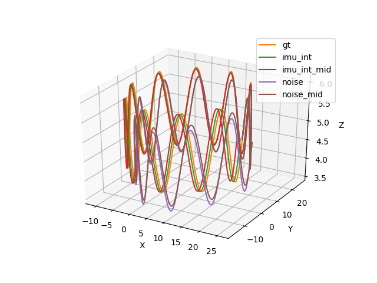
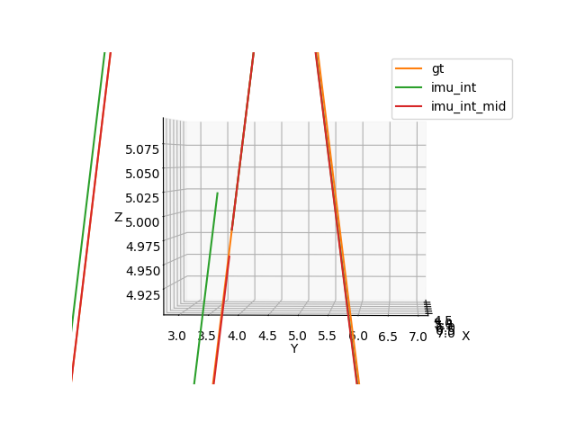
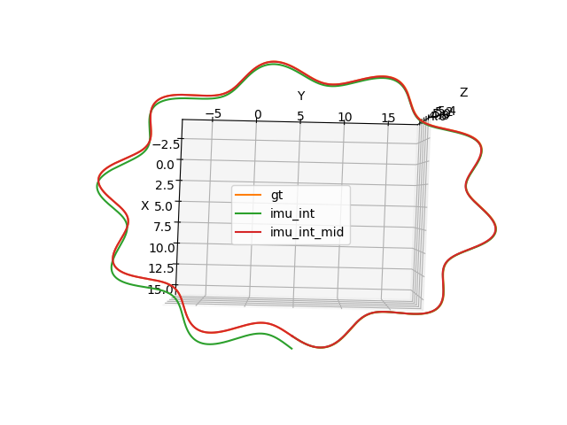
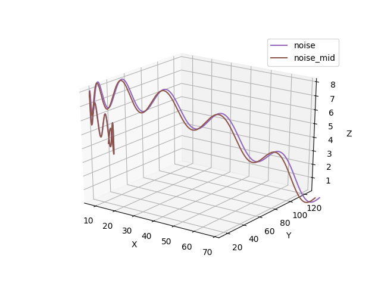
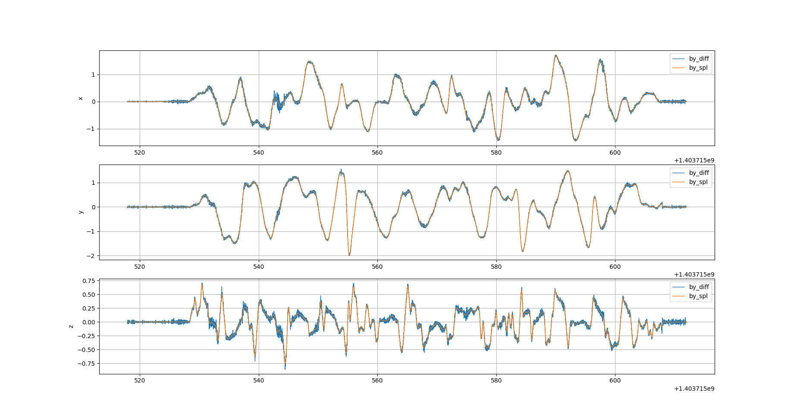
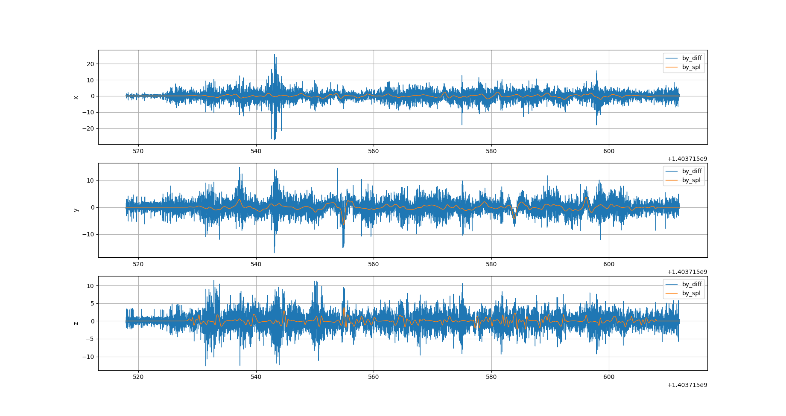
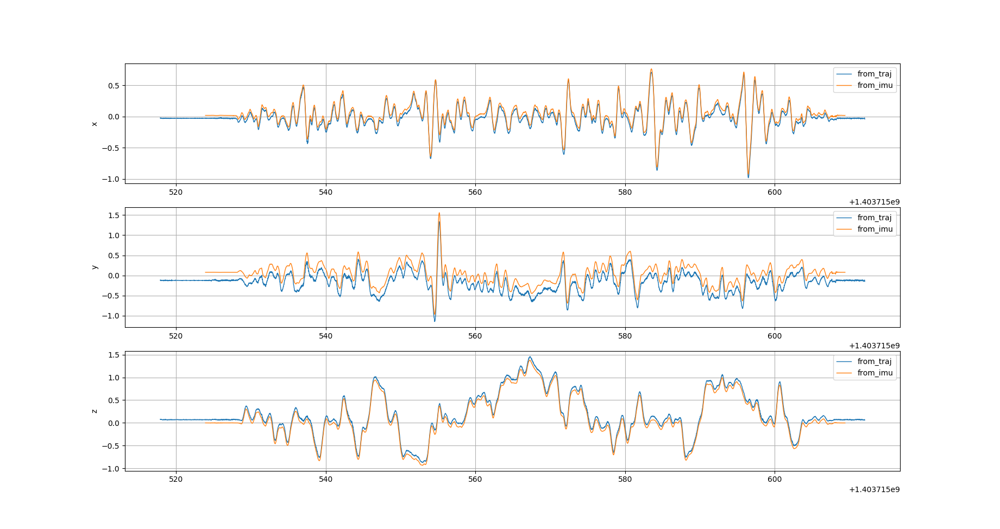
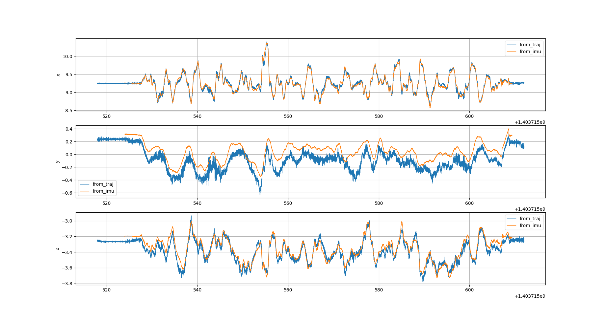

图1-1: 加速度计艾伦方差曲线
图1-1: 加速度计艾伦方差曲线仿真IMU数据集，自己设定的加速度的高斯白噪声为0.029，陀螺仪的高斯白噪声为0.035，加速度bias的随机游走噪声为0.0008，陀螺仪bias的随机游走噪声为0.00016。 通过使用imu_utils开源工具，我们可以得到imu_acc, imu_gyro相应数据，由于绘制Allan_variance用的是matlab编写的文件，因为版权问题，自己动手写了一个绘制曲线的python脚本。 需要注意一点的是imu_utils得到的imu_gyro 数据单位是用deg/h表示，需要自己动手转化为rad/s才能直接从Allan_variance上直接读出相应标定数据
图1-1: 加速度计艾伦方差曲线
 图1-2: 陀螺仪艾伦方差曲线
图1-2: 陀螺仪艾伦方差曲线
从上图中得到: 用imu_utils工具进行标定，加速度和陀螺仪的高斯白噪声与理论值比较接近，数据在一个数量级上，但加速度和陀螺仪bias的随机游走噪声误差较大，数据相差一个数量级，需要自己进行缩放调整。
void IMU::testImuMidIntegral(std::string src, std::string dist)
{
std::vector<MotionData>imudata;
LoadPose(src,imudata);
std::ofstream save_points;
save_points.open(dist);
double dt = param_.imu_timestep;
Eigen::Vector3d Pwb = init_twb_; // position : from imu measurements
Eigen::Quaterniond Qwb(init_Rwb_); // quaterniond: from imu measurements
Eigen::Vector3d Vw = init_velocity_; // velocity : from imu measurements
Eigen::Vector3d gw(0,0,-9.81); // ENU frame
Eigen::Vector3d temp_a;
Eigen::Vector3d theta;
for (int i = 0; i < imudata.size() - 1; ++i) {
MotionData imupose = imudata[i];
MotionData imupose_1 = imudata[i+1];
Eigen::Quaterniond dq;
Eigen::Vector3d dtheta_0 = imupose.imu_gyro * dt;
Eigen::Vector3d dtheta_1 = imupose_1.imu_gyro * dt;
dq.w() = 1;
dq.x() = 0.25 * (dtheta_0.x() + dtheta_1.x());
dq.y() = 0.25 * (dtheta_0.y() + dtheta_1.y());
dq.z() = 0.25 * (dtheta_0.z() + dtheta_1.z());
/// imu dynamimc model, mid-point integration
Eigen::Quaterniond Qwb_result = Qwb * dq;
Eigen::Vector3d acc_w = 0.5 * (Qwb * (imupose.imu_acc) + Qwb_result * (imupose_1.imu_acc)) + gw;
Qwb = Qwb_result;
Vw = Vw + acc_w * dt;
Pwb = Pwb + Vw * dt + 0.5 * dt * dt * acc_w;
save_points << imupose.timestamp << " "
<< Qwb.w() << " "
<< Qwb.x() << " "
<< Qwb.y() << " "
<< Qwb.z() << " "
<< Pwb(0) << " "
<< Pwb(1) << " "
<< Pwb(2) << " "
<< Qwb.w() << " "
<< Qwb.x() << " "
<< Qwb.y() << " "
<< Qwb.z() << " "
<< Pwb(0) << " "
<< Pwb(1) << " "
<< Pwb(2) << " "
<< std::endl;
}
std::cout << "test end" << std::endl;
}
图2-1: 全部曲线
图2-2: 真实基准、欧拉积分与中值积分的初末位置
图2-3: 欧拉积分与中值积分曲线俯视图
图2-4: 带噪声的欧拉积分与中值积分曲线
坐标系：
通过Euroc数据集实现离散轨迹生成IMU数据涉及3个坐标系，它们分别是：
已知量：
待求变量：
直接对轨迹的方位角求导可以得到角速度在惯性坐标系下的表示：
\[ ln(R_{IB,k+1}R_{IB,k}^T )^\vee = \Delta \boldsymbol{\varphi}_{IB}^I \] \[ \frac{ln(R_{k+1}R_k^T )^\vee}{\Delta t} = \omega_{IB}^I \]坐标变换后可得IMU坐标系下的角速度：
\[ \omega_{IM}^{M} = \omega_{IB}^{M} = R_{MB} R_{BI} \omega_{IB}^{I} \]以Euroc数据集进行验证。Euroc数据集vicon room包含6自由度的ground truth和IMU原始数据。理论上通过对轨迹的积分和坐标变换可以获得IMU坐标系下的角速度和加速度。 而数据中已经包含IMU的原始数据。从ground truth获得的传感器数据与IMU数据之间的差，理论上就是IMU传感器各轴的零偏。
论文中采用四次B样条表示法来描述离散点构成的曲线，四次B样条满足二阶导数连续性，因此其结果更加平滑。 由于李代数下的B样条代码实现较为复杂，而本次作业时间有限，因此使用差分求导并滤波的方式替代B样条上求导解析式，验证推导的正确性。 图3-1与3-2显示了两种不同求导方式的差异。四次B样条求导后的平滑度远高于差分求导，但是后者趋势正确，经滤波后能够用于验证上文公式。
图3-1: 差分求导与四次B样条求导得到的速度曲线对比
图3-2: 差分求导与四次B样条求导得到的加速度曲线对比
图3-3: 由轨迹求解出的IMU坐标系下的角速度
图3-4: 由轨迹求解出的IMU坐标系下的加速度
通过轨迹求出的IMU数据和传感器真实数据走势非常接近。但是由于IMU的噪声和ground truth不是理想的观测，因此仍存在各自的噪声。
对离散采样数据进行直接求导会引入大量噪声。难以直接对比通过ground truth和通过IMU获得数据。在对结果进行简单的滑动窗口滤波之后， 噪声降低，可以看出两种方式获得的数据的差值，为一个略有波动的恒定值，即该轴传感器数据的零偏。结果基本验证了上文公式推导的正确性。